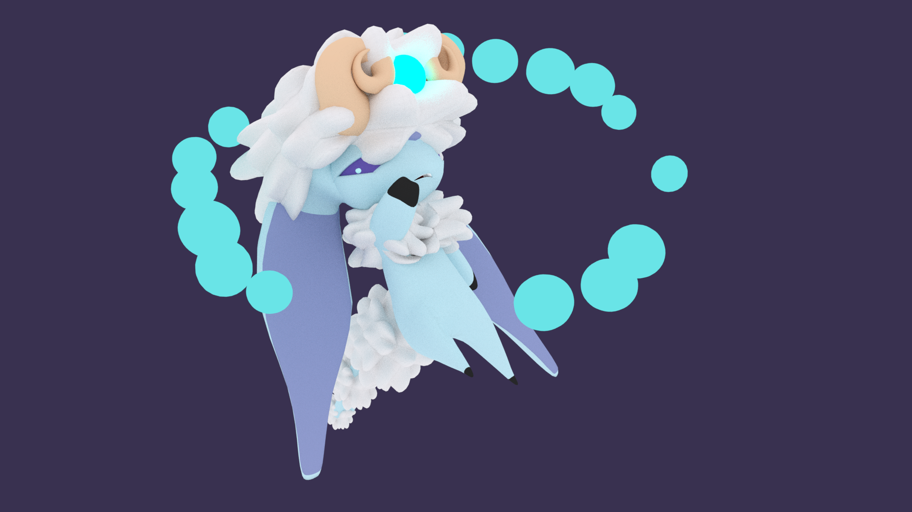

Temples of Impla

Their bodies are in a permanent, self-enforced state of rest; never opening their eyes, and using psychic energy to move
A Sloth Imp expelling psychic energy into small orbs, as it floats.
The Slothful imps are in a permanent state of rest and rarely move on their own. They lack motivation and are actually closely related to Wrathful and Lustful imps. They are very hard on themselves for being unable to contribute to the other imps, their mind so plagued with self-doubt and lack of purpose, they lay there, thinking of all the things they want to do, but can’t due to their vice. Other imps cannot communicate with them easily and view them as being lazy, further driving the barely functioning imps into a state of aware vegetation. They have a lot of potential that they cannot tap into without support from another imp and are good at mundane labor that does not acquire ambition. They’re bodies are soft, fluffy and limber due to their lack of movement, lack of self-care and low muscle density. Higher functioning sloth imps are strongly telepathic and can move their limbs with their minds/telepathy, because of their, their more aware of subtle changes in the environment, through their bodies, with their mind reacting quicker than their body can.
These fruits are packed with a dreamy, smooth flavor that helps the Sloth Imp use what little energy they have to enjoy them.
The Sloth Imp's wool is one of the softest, prised materials in Impla. They are used to make high-quality materials like pillows and cloth for wrapping wounds. Some Sloth Imps and taken away from their village in the dead of night for this wool. Wrath Imps have stepped in to oversee their safty.